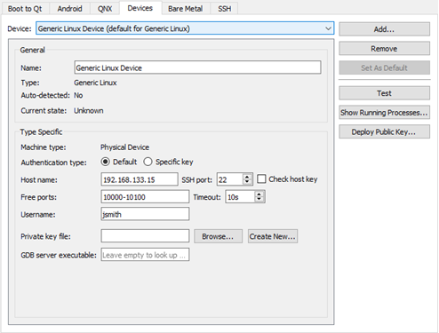
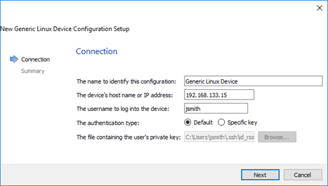
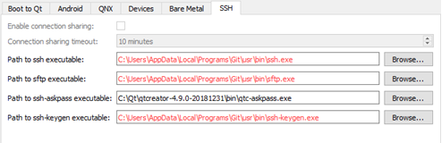
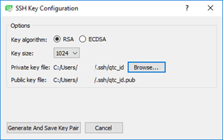

Connecting Embedded Linux Devices
You can connect embedded Linux devices to the development PC to run, debug, and analyze applications built for them from Qt Creator.
If you have a tool chain for building applications for embedded Linux devices installed on the development PC, you can add it to Qt Creator. You can then select a kit with Embedded Linux device type to build applications for and run them on embedded Linux devices.
To be able to run and debug applications on embedded Linux devices, you must add devices and select them in the Qt Creator kit.
You use a wizard to create the connections. You can edit the settings later in Tools > Options > Devices > Devices.

You can protect the connections between Qt Creator and a device by using an OpenSSH connection. OpenSSH is a connectivity tool for remote login using the SSH protocol. The OpenSSH suite is not delivered with Qt Creator, so you must download it and install it on the development PC. Then, you must configure the paths to the tools in Qt Creator. For more information, see Configuring SSH Connections.
You need either a password or an SSH public and private key pair for authentication. If you do not have an SSH key, you can use the ssh-keygen tool to create it in Qt Creator. For more information, see Generating SSH Keys.
Note: Qt Creator does not store passwords, so if you use password authentication, you may need to enter the password on every connection to the device, or, if caching is enabled, at every Qt Creator restart.
To configure connections between Qt Creator and an embedded Linux device and to specify build and run settings for the device:
- Make sure that your device can be reached via an IP address.
- Select Tools > Options > Kits > Qt Versions > Add to add the Qt version for embedded Linux.
- Select Tools > Options > Kits > Compilers > Add to add the compiler for building the applications.
- To deploy applications and run them remotely on devices, specify parameters for accessing the devices:
- Select Tools > Options > Devices > Devices > Add > Generic Linux Device > Start Wizard.

- In the The name to identify this configuration field, enter a name for the connection.
- In the The device's host name or IP address field, enter the host name or IP address of the device. This value will be available in the variable
%{Device:HostAddress}. - In the The username to log into the device field, enter the username to log into the device and run the application as. This value will be available in the variable
%{Device:UserName}. - In the The authentication type field, select Default to use the currently displayed private key file for authentication. Select Specific Key to use some other key, and enter the path to the file that contains the private key in the field below. This value will be available in the variable
%{Device:PrivateKeyFile}. - Click Next to create the connection.
All of these parameters can be edited later, as well as additional ones that the wizard does not show because there are sensible default values. One of these is the SSH port number, which is available in the variable
%{Device:SshPort}. - Select Tools > Options > Devices > Devices > Add > Generic Linux Device > Start Wizard.
- Select Tools > Options > Kits > Add to add a kit for building for the device. Select the Qt version, compiler, and device that you added above, and choose Generic Linux Device for the device type.
- To specify build settings:
- Open a project for an application you want to develop for the device.
- Select Projects > Build & Run to enable the kit that you specified above.
- Select Run to specify run settings. Usually, you can use the default settings.
When you run the project, Qt Creator deploys the application as specified by the deploy steps. By default, Qt Creator copies the application files to the device. For more information, see Deploying Applications to Embedded Linux Devices.
Configuring SSH Connections
SSH connections are established via an OpenSSH client running in master mode, if possible. Connection sharing is enabled by default to allow sharing multiple sessions over a single SSH connection. This way, a connection is only established once and then re-used by subsequent run and deploy procedures, saving connection setup overhead particularly with embedded devices. Because connection sharing is not supported on Windows, a new SSH connection is created for each deploy or run procedure.
To create SSH connections, you must install the OpenSSH suite, which includes the ssh, sftp, and ssh-keygen tools on the development PC.
To tell Qt Creator where it can find the tools, specify the paths to the directories where the tools are installed in Tools > Options > Devices > SSH:

- Deselect the Enable connection sharing check box to create a new SSH connection for each deploy and run procedure. This option is grayed on Windows, where connection sharing is not supported.
- In the Connection sharing timeout field, specify the timeout for reusing the SSH connection in minutes.
- In the Path to ssh executable field, enter the path to the directory where the OpenSSH executable is installed.
- In the Path to sftp executable field, enter the path to the directory where the SFTP executable is installed.
- In the Path to ssh-askpass executable field, enter the path to the directory where the ssh-askpass executable is installed. Usually, you can use the default path that points to the implementation of the tool delivered with Qt Creator, qtc-askpass.
- In the Path to ssh-keygen executable field, enter the path to the directory where the ssh-keygen executable is installed.
Generating SSH Keys
If you do not have an SSH public and private key pair, you can generate it in Qt Creator. The connection wizard can create the key pair for you, or you can create it separately.
You can specify key length and the key algorithm, RSA or ECDSA. If you only use the keys to protect connections to the emulator or device, you can use the default values.
- Select Tools > Options > Devices > Devices > Create New.

- In the Private key file field, select the location to save the private key.
The Public key file field displays the location to save the corresponding public key.
- Select Generate And Save Key Pair to generate and save the keys at the specified locations.
Managing Device Processes
You can view processes running on devices and kill them. Select Tools > Options > Devices > Devices > Show Running Processes.
You can filter the processes by name or ID in the List of Processes dialog.
To update the process list, select Update List.
To kill a process, select it in the list, and then select Kill Process.